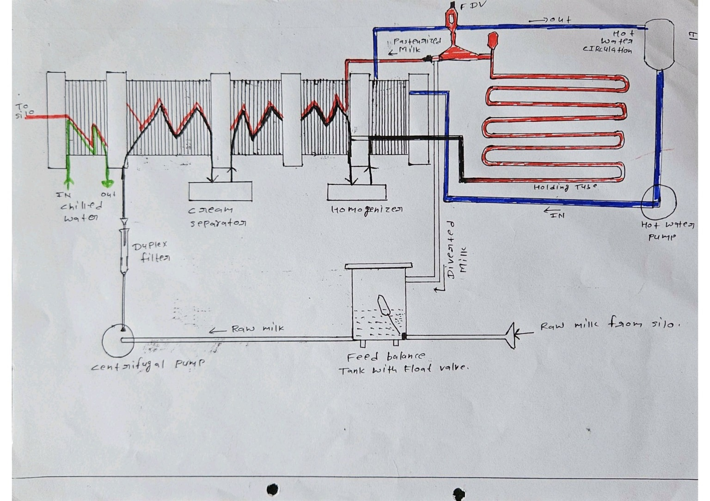
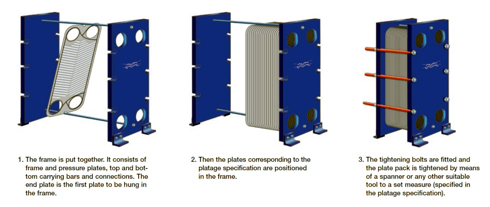
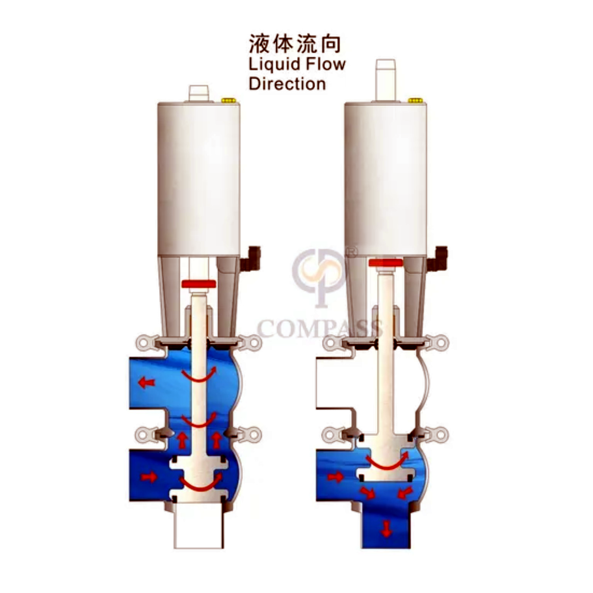
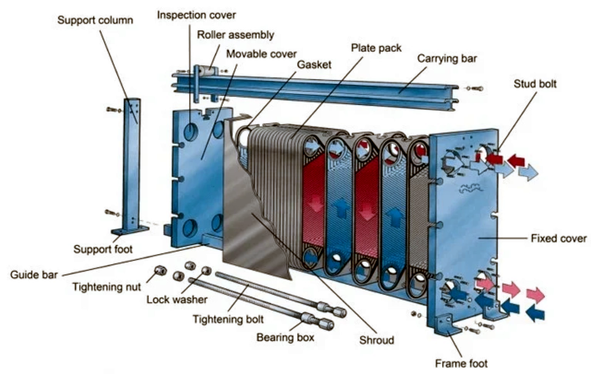

Milk Pasteurizer
From raw-milk feed to regeneration, heating, holding, diversion and final cooling — this page explains the engineering of a continuous HTST milk pasteurizer using the diagrams supplied for Dairy Sphere and the accompanying dairy-processing references.

Used as the main process reference instead of the previous generic diagram. The original plant-style arrangement is preserved; the surrounding card is only for Dairy Sphere presentation.
1. What is a Milk Pasteurizer?
A continuous HTST pasteurizer is a closed process system in which milk is continuously heated to the required pasteurization temperature, held for the specified time, and then cooled. The supplied pasteurization notes describe HTST as a large-scale continuous system designed for rapid pathogen destruction with controlled thermal exposure. The Dairy Engineering material identifies the plate heat exchanger (PHE) as the main heat-transfer equipment for HTST milk pasteurization.
Important: temperature/time values vary with the governing standard, product and process. The values above are presented as stated in your supplied study material rather than as a universal legal specification.
2. Complete HTST Process Flow
The standard complete pasteurizer described in the supplied Tetra Pak handbook contains a balance tank, feed pump, flow controller, regenerative preheating sections, centrifugal clarification where applicable, heating section, holding tube, booster pump, hot-water heating system, regenerative cooling sections, final cooling sections, flow-diversion valve and control panel.
The exact location of a separator, homogenizer or booster pump depends on the plant design. Your supplied plant drawing is therefore kept as the primary plant-specific reference on this page, while the strip above represents the generalized complete-pasteurizer architecture described in the handbook.
3. Plate Heat Exchanger (PHE)
The PHE is the core heat-transfer device of an HTST pasteurizer. Thin corrugated plates create alternating channels for product and service fluids. The corrugations promote turbulence and improve heat transfer. The supplied pasteurization notes specifically explain that counter-current flow uses the available temperature difference efficiently and that plate corrugations promote turbulence.


4. Regeneration: Heat Recovery
Regeneration uses hot pasteurized milk to preheat incoming cold raw milk while simultaneously cooling the pasteurized milk. Modern pasteurizers can achieve regeneration efficiencies of about 94–95% under suitable conditions.
tᵣ = milk temperature after regeneration
tᵢ = incoming raw-milk temperature
tₚ = final pasteurization temperature
Example given in the handbook: incoming milk 4°C, pasteurization temperature 72°C and post-regeneration temperature 68°C gives approximately 94.1% regeneration efficiency.
5. Heating Section & Hot-Water Circuit
After regenerative preheating, the milk enters the heating section. In an indirect pasteurizer, the heating medium is commonly hot water circulated through the PHE. The supplied Tetra Pak material describes a temperature controller acting on the steam regulating valve: when product temperature tends to fall, the controller increases steam supply to the circulating water.
The hot-water system can include an expansion vessel to accommodate water-volume increase during heating, pressure and temperature indicators, and safety/ventilation valves.
6. Holding Tube
Correct heat treatment requires the milk to remain at the required pasteurization temperature for the specified holding time. The handbook describes an external holding cell commonly arranged as a spiral or zig-zag pipe; the pipe length and product flow rate are selected to obtain the required holding time. Accurate flow control is therefore essential.
The red zig-zag line is the product holding section after heating/FDV routing in the drawing, while the blue line shows the hot-water circulation loop.
V = effective holding volume; Q = product flow rate; t = required holding time.
Your pasteurization notes additionally discuss the non-uniform velocity profile in the tube and the use of a design efficiency factor when sizing the holding volume.
7. Flow Diversion Valve (FDV)
The FDV is installed downstream of the holding tube. A temperature transmitter monitors the product. If the product reaches the required temperature, the valve permits forward flow. If temperature falls below the required threshold, the product is diverted back to the balance tank instead of entering the acceptable pasteurized-product route.
8. Regenerative Cooling + Final Cooling
This section was missing from the previous version, so it is now explicitly included. After successful FDV forward flow, the hot pasteurized milk gives up much of its heat to incoming cold raw milk in the regenerative section. The remaining heat is removed in the final cooling section using chilled water or another suitable cooling medium. The handbook lists regenerative cooling sections and final cooling sections as separate parts of a complete pasteurizer.
The Tetra Pak reference notes that with approximately 94–95% regeneration efficiency, the practical regenerative cooling endpoint may be around 8–9°C; cooling to about 4°C therefore requires a colder final cooling medium.
9. Flow, Temperature & Process Control
The flow controller maintains the product flow at the designed value. This is directly connected to holding-time control because the holding tube is dimensioned for a specified flow rate. The handbook notes that the flow controller is often located after the first regenerative section.
- Temperature transmitter: measures the critical product temperature.
- Temperature controller: adjusts the heating-medium control valve.
- Flow controller: maintains the designed throughput and therefore the holding-time condition.
- Recorder/control panel: records pasteurization temperature and relevant diversion/control signals.
- Low-level protection: the balance tank can use a low-level electrode to initiate diversion if the pasteurizer loses its required product level.
10. Booster Pump & Pressure Protection
A booster pump can be installed in the product line to maintain a positive pressure differential on the pasteurized side through regenerative and cooling sections. The handbook notes that the pump may be installed after the holding section or before the heating section; placing it before heating reduces its operating temperature and can extend pump life.
11. Balance Tank & Feed Pump
The balance tank provides a buffer and a constant head for the feed pump. Its float-controlled inlet maintains the liquid level. The handbook notes that the pasteurizer should remain full during operation to avoid product burning onto the plates; a low-level signal can therefore trigger diversion.
The feed pump supplies milk from the balance tank to the pasteurizer. Stable feed conditions are important because changes in product flow directly influence the holding condition.
12. PHE Construction & Plate Pack


For a hygienic PHE, the plate pack must provide the required heat-transfer area while maintaining acceptable pressure drop and cleanability. The supplied handbook also stresses that channel geometry must be designed for effective CIP: passages that are too wide may not create enough cleaning turbulence, while passages that are too narrow can create excessive pressure drop.
13. CIP & Fouling
Milk heated above about 65°C produces fouling on heat-transfer surfaces, so pasteurizers require regular cleaning. Fouling rate depends on factors including product/heating-medium temperature difference, milk quality, product air content and pressure conditions in the heating section.
The exact CIP concentration, temperature, time and sequence must follow the plant's validated CIP programme; the supplied sources do not provide one universal recipe for every dairy.
14. Pasteurization Quality Verification
Your pasteurization notes include enzymatic verification as a quality-control topic. Alkaline phosphatase is discussed as an indicator for adequate pasteurization of fluid milk, while the notes discuss the Storch/peroxidase test for higher-fat products such as cream.
15. Engineering Takeaways
- Heating alone is not pasteurization: the required combination of temperature and holding time must be achieved.
- Flow controls time: holding-tube volume and product flow determine residence time.
- Regeneration saves energy: pasteurized milk preheats incoming raw milk and is cooled at the same time.
- FDV is a safety barrier: under-temperature product is diverted rather than released.
- Cooling is part of the pasteurizer: regenerative cooling plus final cooling completes the thermal cycle.
- Pressure direction matters: pasteurized-side pressure helps protect against raw-product contamination in the event of a plate leak.
- CIP is part of the design: heat-transfer performance and cleanability must be considered together.